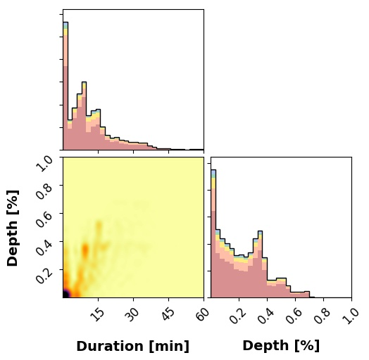

hist_mutual.py ¶
Histograms of the mutual transit events in TRAPPIST-1. Shows histograms of the fractional depth and duration of these events for all pairs of planets.
{kind=link}
{kind=link}
{kind=link}
{kind=link}
{kind=link}
{kind=link}
TRAPPIST-1h¶
{kind=link}
-
scripts.hist_mutual.Compute(nsamp=100, nbody=True, progress_bar=True, **kwargs)¶ Runs the simulations.
Parameters: - nsamp (int) – The number of prior samples to draw. Default 300
- nbody (bool) – Use the N-Body solver? Default
True - progress_bar (bool) – Display a progress bar? Default
True
-
scripts.hist_mutual.MergeFiles()¶ Merge all the npz savesets into a single one for faster plotting.
-
scripts.hist_mutual.Plot()¶
-
scripts.hist_mutual.Submit(queue=None, email=None, walltime=8, nodes=5, ppn=12, mpn=None, nsamp=50000, batch_size=30, nproc=None)¶ Submits a PBS cluster job to run
Compute()in parallel.Parameters: - queue (str) – The name of the queue to submit to. Default
None - email (str) – The email to send job status notifications to. Default
None - walltime (int) – The number of hours to request. Default 8
- nodes (int) – The number of nodes to request. Default 5
- ppn (int) – The number of processors per node to request. Default 12
- nsamp (int) – The number of prior samples to draw. Default 50,000
- batch_size (int) – Size of each batch used in the parallelization. Default 100
- mpn (int) – Memory per node in gb to request. Default no setting.
- nproc (int) – Number of processes to spawn. Default is the number of core.
- queue (str) – The name of the queue to submit to. Default
-
scripts.hist_mutual.histogram(system, tstart, tend, dt=0.0001)¶ Computes statistical properties of mutual events (PPOs occuring on the face of the star).
Parameters: - system (
planetplanet.structs.System) – A system instance. - tstart (float) – The integration start time (BJD − 2,450,000)
- tend (float) – The integration end time (BJD − 2,450,000)
- dt (float) – The time resolution in days. Occultations shorter than this will not be registered.
- system (